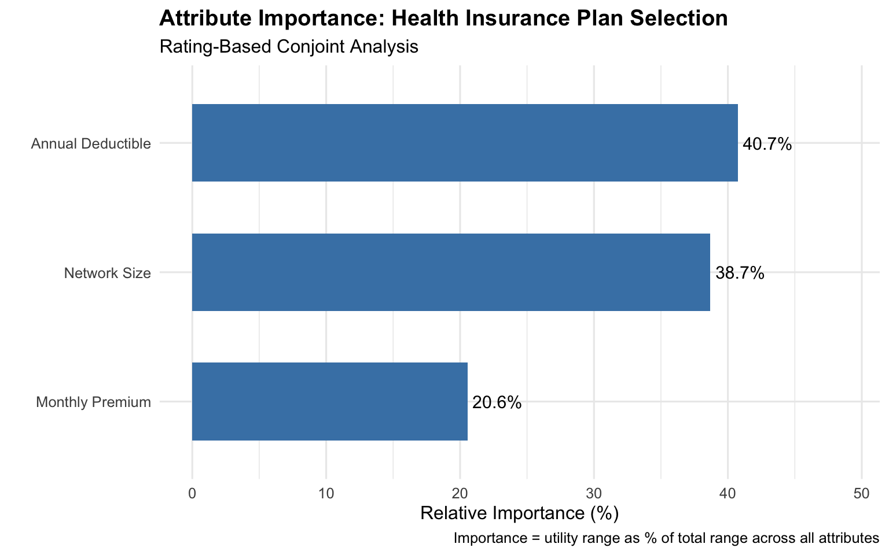

Conjoint analysis is a survey-based statistical technique used to understand how people make decisions when facing trade-offs between multiple attributes of a product or service. The core idea is simple: in real life, we rarely get everything we want. When choosing a health insurance plan, for example, we might prefer both low premiums AND low deductibles, but plans with low premiums often come with high deductibles. Conjoint analysis helps us understand how people navigate these trade-offs.
The term “conjoint” comes from “considered jointly”—we’re studying how attributes are evaluated together rather than in isolation. This is crucial because asking someone “Do you prefer low cost?” will always get a “yes,” but asking them to choose between a low-cost option with long wait times versus a high-cost option with short wait times reveals their true priorities.
Why Use Conjoint Analysis in Healthcare Management?
Healthcare managers face constant decisions about service design:
Insurance plan design: What combination of premium, deductible, and coverage will attract enrollees?
Clinic operations: Should we prioritize shorter wait times or extended hours?
Telehealth services: Do patients value video consultations enough to pay more for them?
Hospital services: What amenities matter most to patients choosing where to receive care?
Conjoint analysis answers these questions by quantifying preferences. Instead of relying on intuition or simple surveys (“Would you like shorter wait times?”), conjoint analysis reveals how much each feature actually matters when people must make realistic trade-offs.
Key Outputs from Conjoint Analysis
Conjoint analysis produces several valuable insights:
1. Part-Worth Utilities
Part-worth utilities (also called “part-worths” or “utility scores”) are the building blocks of conjoint analysis. They represent the value or satisfaction that a person derives from a specific level of an attribute.
Think of it this way: every product or service is a bundle of attributes. A health insurance plan is a bundle of (premium, deductible, network size, etc.). The total utility (satisfaction) a person gets from a plan is the sum of the part-worth utilities for each attribute level in that plan.
Example: If the part-worth for “Large Network” is +3 and for “Small Network” is 0, then having a large network adds 3 utility units to the overall plan value. These numbers are relative—they only make sense in comparison to other levels of the same attribute.
2. Attribute Importance
Once we have part-worths, we can calculate how important each attribute is relative to others. This is done by looking at the range of utilities within each attribute (highest level minus lowest level) and comparing these ranges.
Example: If premium ranges from 0 to 5 utility units and network size ranges from 0 to 2 units, then premium has a larger impact on preferences and is therefore more “important.”
3. Willingness-to-Pay (WTP)
When price or cost is one of the attributes, we can convert utility differences into dollar values. This tells us how much extra a person would be willing to pay for an improvement in another attribute.
Example: If people would pay $50 more per month for a large network versus a small network, this helps managers decide whether investing in network expansion is worthwhile.
4. Market Share Prediction
By knowing the utilities for each attribute level, we can predict what percentage of people would choose one option over another. This is invaluable for forecasting demand and competitive positioning.
Two Main Approaches
This tutorial covers the two most common conjoint methods:
Rating-Based Conjoint
What respondents do: Rate each profile on a scale (e.g., 1-10)
Analysis approach: Linear regression (OLS)
Advantages: Simple to understand and implement
Limitations: Respondents may rate all options similarly, not revealing true trade-offs
Limitations: Requires more sophisticated experimental design
Both methods ultimately produce the same types of outputs (part-worths, importance, WTP, market share), but choice-based conjoint is generally preferred in academic research and practice because it better reflects actual decision-making behavior (Louviere et al., 2000).
Scenario 1: Health Insurance Plan Selection
Context and Background
One of the most studied applications of conjoint analysis in healthcare management is understanding how employees choose health insurance plans during open enrollment periods. This is a high-stakes decision for both employees (who will live with the plan for a year) and employers (who subsidize the plans).
Research has shown that employees often struggle with this decision due to the complexity of plan attributes. Studies by Sinaiko and Hirth (2011) in the Journal of Health Economics found that many employees make “dominated choices”—selecting plans that are objectively worse than alternatives on all dimensions. Understanding which attributes drive choices can help employers design better choice architectures and communication strategies.
Our example uses three key attributes that consistently appear in health plan conjoint studies:
Attribute
Level 1
Level 2
Why It Matters
Monthly Premium
$200
$300
Direct, visible cost paid every month
Annual Deductible
$500
$1,500
Amount paid before insurance kicks in
Network Size
Large
Small
Access to preferred doctors/hospitals
Rating-Based Conjoint Analysis
Conceptual Overview
In rating-based conjoint analysis, we show respondents one hypothetical profile at a time and ask them to rate how attractive it is. For example:
Plan A: Monthly premium $200, Deductible $1,500, Small network
“On a scale from 1 to 10, how likely would you be to choose this plan?”
The respondent might give this a 4 out of 10. Then we show them another profile:
Plan B: Monthly premium $300, Deductible $500, Large network
Rating: 7 out of 10
By collecting ratings for multiple profiles across many respondents, we can use regression analysis to decompose these ratings into the contribution of each attribute. This works because we’ve systematically varied the attributes across profiles.
The Statistical Model
Rating-based conjoint uses ordinary least squares (OLS) regression, the same technique used in standard linear regression. The model assumes that a person’s rating is a linear combination of the utilities they assign to each attribute level:
Where: - \(\beta_0\) is the intercept (baseline rating) - \(\beta_1, \beta_2, \beta_3\) are the part-worth utilities for each attribute - \(\varepsilon\) is random error (individual variation, measurement error, etc.)
The coefficients we estimate ARE the part-worths. They tell us how much each unit change in an attribute affects the rating.
Generating the Experimental Design
First, we create all possible combinations of our attribute levels. With 3 attributes × 2 levels each, we have \(2^3 = 8\) possible profiles. This is called a full factorial design.
# Create full factorial design for insurance plans# This generates all possible combinations of attribute levelsinsurance_profiles <-expand.grid(premium =c(200, 300),deductible =c(500, 1500),network =c("Large", "Small"))insurance_profiles$profile_id <-1:nrow(insurance_profiles)# Display all 8 profilesknitr::kable(insurance_profiles,col.names =c("Premium ($)", "Deductible ($)", "Network", "Profile ID"),caption ="Health Insurance Plan Profiles (Full Factorial Design)")
Health Insurance Plan Profiles (Full Factorial Design)
Premium (\()| Deductible (\))
Network
Profile ID
200
500
Large
1
300
500
Large
2
200
1500
Large
3
300
1500
Large
4
200
500
Small
5
300
500
Small
6
200
1500
Small
7
300
1500
Small
8
Simulating Respondent Data
In a real study, you would collect actual ratings from respondents. For this tutorial, we simulate data based on assumed “true” preferences. This allows us to verify that our analysis recovers the correct values.
Our assumed true preferences: - Premium: -0.02 utility per dollar (people prefer lower premiums) - Deductible: -0.003 utility per dollar (people prefer lower deductibles) - Network: +3 utility for Large network (people prefer larger networks)
These values reflect that a $100 difference in monthly premium (-0.02 × 100 = -2 utility) has about the same impact as a large vs. small network (+3 utility), suggesting people would pay roughly $150/month more for a large network.
# Simulate ratings from 100 respondents# Each respondent rates all 8 profilesn_respondents <-100rating_insurance <-data.frame()for (resp in1:n_respondents) {for (i in1:nrow(insurance_profiles)) {# Calculate utility based on true preferences# The baseline of 50 centers our utility scale utility <-50+-0.02* insurance_profiles$premium[i] +-0.003* insurance_profiles$deductible[i] +3* (insurance_profiles$network[i] =="Large") +rnorm(1, 0, 3) # Add random noise to simulate individual variation# Convert utility to a 1-10 rating scale# We divide by 5 to scale appropriately and bound between 1 and 10 rating <-round(pmin(pmax(utility /5, 1), 10), 1) rating_insurance <-rbind(rating_insurance, data.frame(respondent_id = resp,profile_id = i,premium = insurance_profiles$premium[i],deductible = insurance_profiles$deductible[i],network = insurance_profiles$network[i],rating = rating )) }}# Show first few rowscat("Dataset structure: ", nrow(rating_insurance), "rows (100 respondents × 8 profiles)\n\n")
Intercept (≈10): The baseline rating when all attributes are at their reference levels (but this is somewhat artificial given our coding)
Premium (≈-0.004): Each additional dollar in monthly premium decreases the rating by about 0.004 points. So a $100 increase reduces rating by 0.4 points.
Deductible (≈-0.0006): Each additional dollar in deductible decreases rating by about 0.0006 points. A $1,000 increase reduces rating by 0.6 points.
Network_large (≈0.6): Having a large network (vs. small) increases rating by about 0.6 points.
Note: Our recovered coefficients are scaled versions of the true utilities because we transformed utility to a 1-10 rating scale.
Calculating Attribute Importance
Attribute importance tells us which features have the biggest impact on preferences. The calculation is straightforward:
For each attribute, calculate the utility range: the difference between the highest and lowest part-worth values
Sum all the ranges
Express each range as a percentage of the total
Why use ranges? Because importance depends on how much the attribute levels differ. If we tested premiums of $200 vs. $201, premium would appear unimportant even though cost matters greatly to people. The range captures the actual impact given the levels we tested.
# Extract coefficientscoef_ins <-coef(model_rating_ins)# Calculate utility ranges for each attribute# For continuous variables: coefficient × (max level - min level)# For binary variables: coefficient × 1range_premium <-abs(coef_ins["premium"] * (300-200)) # $100 differencerange_deductible <-abs(coef_ins["deductible"] * (1500-500)) # $1000 differencerange_network <-abs(coef_ins["network_large"] *1) # Large vs Small# Total range (sum of all ranges)total_range <- range_premium + range_deductible + range_network# Calculate importance as percentageimportance_rating_ins <-data.frame(attribute =c("Monthly Premium", "Annual Deductible", "Network Size"),utility_range =c(range_premium, range_deductible, range_network),importance_pct =c(range_premium, range_deductible, range_network) / total_range *100)knitr::kable(importance_rating_ins, digits =2,col.names =c("Attribute", "Utility Range", "Importance (%)"),caption ="Attribute Importance Scores")
Attribute Importance Scores
Attribute
Utility Range
Importance (%)
premium
Monthly Premium
0.34
20.56
deductible
Annual Deductible
0.66
40.75
network_large
Network Size
0.63
38.69
Visualization:
ggplot(importance_rating_ins, aes(x =reorder(attribute, importance_pct),y = importance_pct)) +geom_col(fill ="steelblue", width =0.6) +geom_text(aes(label =paste0(round(importance_pct, 1), "%")),hjust =-0.1, size =4) +coord_flip() +labs(title ="Attribute Importance: Health Insurance Plan Selection",subtitle ="Rating-Based Conjoint Analysis",x ="",y ="Relative Importance (%)",caption ="Importance = utility range as % of total range across all attributes") +theme_minimal(base_size =12) +theme(plot.title =element_text(face ="bold")) +ylim(0, max(importance_rating_ins$importance_pct) *1.2)

Interpretation: The results show which attributes have the greatest impact on plan ratings given the levels we tested. This helps managers prioritize which plan features to emphasize in communications or modify in plan design.
Calculating Willingness-to-Pay (WTP)
Willingness-to-pay converts the abstract utility values into concrete dollar amounts. This is possible because we included a price attribute (monthly premium) in our study.
The Logic: If we know how much utility a person gets from each attribute and how much utility they lose per dollar of cost, we can calculate the dollar amount that would exactly offset any utility gain.
The Formula: \[\text{WTP} = -\frac{\beta_{\text{attribute}}}{\beta_{\text{price}}}\]
The negative sign is needed because price coefficients are negative (people dislike higher prices) while beneficial attribute coefficients are positive.
Example Calculation: - Network coefficient = +0.6 (utility gain from large network) - Premium coefficient = -0.004 (utility loss per dollar) - WTP = -0.6 / (-0.004) = $150
This means respondents value a large network as much as they would value a $150 reduction in monthly premium.
# Extract relevant coefficientsbeta_network <- coef_ins["network_large"]beta_premium <- coef_ins["premium"]beta_deductible <- coef_ins["deductible"]# Calculate WTP for large network (vs small)wtp_network <--beta_network / beta_premium# Calculate WTP for $1000 lower deductible# (How much extra premium would someone pay to reduce deductible by $1000?)wtp_deductible_reduction <--(beta_deductible *-1000) / beta_premiumcat("Willingness-to-Pay Estimates:\n")
Practical Application: These WTP values help managers make cost-benefit decisions. If expanding the provider network costs the insurer $100 per member per month, and members are willing to pay $150 for it, the expansion could be profitable while also improving member satisfaction.
Market Share Simulation
One of the most powerful applications of conjoint analysis is predicting how the market would respond to different product configurations. Given the part-worth utilities, we can calculate the overall utility of any hypothetical product and predict choice shares.
The Process: 1. Define two (or more) competing options 2. Calculate total utility for each option by summing the part-worths 3. Convert utilities to choice probabilities using the logit formula
Why the Logit Formula?
The logit model comes from random utility theory (McFadden, 1974, who won the Nobel Prize for this work). It assumes that people choose the option with the highest utility, but there’s some randomness in choices. The formula is:
Where \(U_A\) and \(U_B\) are the total utilities of options A and B. This formula has nice properties: - If \(U_A > U_B\), then \(P(A) > 0.5\) (higher utility = higher probability) - If \(U_A = U_B\), then \(P(A) = 0.5\) (equal utilities = equal chances) - Probabilities always sum to 1
# Define two competing health plansplan_A <-data.frame(name ="Premium Plan",premium =250,deductible =500,network_large =1,description ="Mid-price, Low deductible, Large network")plan_B <-data.frame(name ="Budget Plan",premium =200,deductible =1500,network_large =0,description ="Low-price, High deductible, Small network")# Calculate total utility for each plan using estimated coefficientsutility_A <-predict(model_rating_ins, plan_A)utility_B <-predict(model_rating_ins, plan_B)# Apply logit formula for market shareshare_A <-exp(utility_A) / (exp(utility_A) +exp(utility_B))share_B <-exp(utility_B) / (exp(utility_A) +exp(utility_B))# Display resultsmarket_share_rating <-data.frame(Plan =c(plan_A$name, plan_B$name),Description =c(plan_A$description, plan_B$description),Total_Utility =round(c(utility_A, utility_B), 3),Market_Share =paste0(round(c(share_A, share_B) *100, 1), "%"))knitr::kable(market_share_rating,col.names =c("Plan", "Configuration", "Total Utility", "Predicted Share"),caption ="Market Share Simulation: Two Competing Plans")
Market Share Simulation: Two Competing Plans
Plan
Configuration
Total Utility
Predicted Share
Premium Plan
Mid-price, Low deductible, Large network
9.349
75.5%
Budget Plan
Low-price, High deductible, Small network
8.222
24.5%
Interpretation: The model predicts that approximately 76% of enrollees would choose the Premium Plan despite its higher cost, because the low deductible and large network compensate for the price difference. This type of simulation helps managers:
Forecast enrollment in different plan designs
Understand competitive positioning
Optimize plan configurations
Choice-Based Conjoint Analysis
Conceptual Overview
Choice-based conjoint (CBC), also known as a Discrete Choice Experiment (DCE), is considered the gold standard in conjoint analysis because it closely mimics real-world decision-making (Louviere, Hensher, & Swait, 2000).
Instead of rating profiles individually, respondents are shown choice sets containing two or more options and asked to pick their preferred one:
Choice Set 1:
Plan A
Plan B
Premium
$200
$300
Deductible
$1,500
$500
Network
Small
Large
Which plan would you choose? ☐ Plan A ☐ Plan B
By forcing a choice, we ensure that respondents make explicit trade-offs. Someone who wants both low premium AND low deductible must decide which matters more.
The Statistical Model
When choice sets have exactly two options (binary choice), we can use standard logistic regression. The key insight is that the choice depends on the difference in utilities between the options.
Mathematical Foundation: - Utility of Plan A: \(U_A = \beta_1 X_{A1} + \beta_2 X_{A2} + ...\) - Utility of Plan B: \(U_B = \beta_1 X_{B1} + \beta_2 X_{B2} + ...\) - Person chooses A if \(U_A > U_B\), i.e., if \(U_A - U_B > 0\)
This difference can be written as: \[U_A - U_B = \beta_1 (X_{A1} - X_{B1}) + \beta_2 (X_{A2} - X_{B2}) + ... = \beta_1 \Delta X_1 + \beta_2 \Delta X_2 + ...\]
So we model the probability of choosing A as a function of the attribute differences: \[P(\text{Choose A}) = \frac{1}{1 + e^{-(β_1 \Delta X_1 + β_2 \Delta X_2 + ...)}}\]
This is exactly the logistic regression model! The coefficients we estimate are the part-worth utilities.
Generating Choice Data
We create choice sets by randomly pairing profiles, then simulate choices based on our assumed true utilities.
# Parameters for simulationn_respondents <-100n_choice_sets <-8# Each respondent completes 8 choice taskschoice_insurance <-data.frame()for (resp in1:n_respondents) {for (cs in1:n_choice_sets) {# Randomly select two different profiles for this choice set profiles <-sample(1:8, 2) alt_A <- insurance_profiles[profiles[1], ] alt_B <- insurance_profiles[profiles[2], ]# Calculate utilities using same true values as before utility_A <--0.02* alt_A$premium -0.003* alt_A$deductible +3* (alt_A$network =="Large") +rnorm(1, 0, 1) # Random component utility_B <--0.02* alt_B$premium -0.003* alt_B$deductible +3* (alt_B$network =="Large") +rnorm(1, 0, 1)# Choice: 1 if A chosen, 0 if B chosen choice_A <-as.integer(utility_A > utility_B) choice_insurance <-rbind(choice_insurance, data.frame(respondent_id = resp,choice_set = cs,# Alternative A attributespremium_A = alt_A$premium,deductible_A = alt_A$deductible,network_A = alt_A$network,# Alternative B attributespremium_B = alt_B$premium,deductible_B = alt_B$deductible,network_B = alt_B$network,# Choice outcomechoice_A = choice_A )) }}# Display example choice setscat("Example choice data (first 6 choice sets):\n\n")
Example choice data (first 6 choice sets):
head(choice_insurance, 6)
respondent_id choice_set premium_A deductible_A network_A premium_B
1 1 1 300 500 Large 200
2 1 2 200 1500 Small 300
3 1 3 300 500 Small 200
4 1 4 200 1500 Small 300
5 1 5 300 1500 Large 300
6 1 6 200 1500 Large 300
deductible_B network_B choice_A
1 1500 Large 1
2 500 Small 1
3 1500 Large 0
4 500 Large 0
5 1500 Small 1
6 1500 Small 1
Method 1: Binary Logistic Regression
For binary choices, we create difference variables and use standard logistic regression.
# Create difference variables (A minus B)choice_insurance <- choice_insurance %>%mutate(diff_premium = premium_A - premium_B,diff_deductible = deductible_A - deductible_B,diff_network = (network_A =="Large") - (network_B =="Large") )# Fit binary logistic regression# Note: We remove the intercept (-1) because there's no inherent preference# for "Alternative A" vs "Alternative B" - only the attributes mattermodel_logit_ins <-glm(choice_A ~ diff_premium + diff_deductible + diff_network -1,data = choice_insurance,family = binomial)summary(model_logit_ins)
Call:
glm(formula = choice_A ~ diff_premium + diff_deductible + diff_network -
1, family = binomial, data = choice_insurance)
Coefficients:
Estimate Std. Error z value Pr(>|z|)
diff_premium -0.0248476 0.0023548 -10.55 <2e-16 ***
diff_deductible -0.0033974 0.0002674 -12.70 <2e-16 ***
diff_network 3.8995205 0.2887144 13.51 <2e-16 ***
---
Signif. codes: 0 '***' 0.001 '**' 0.01 '*' 0.05 '.' 0.1 ' ' 1
(Dispersion parameter for binomial family taken to be 1)
Null deviance: 1109.04 on 800 degrees of freedom
Residual deviance: 342.21 on 797 degrees of freedom
AIC: 348.21
Number of Fisher Scoring iterations: 7
Important: We exclude the intercept (-1 in the formula) because the labels “A” and “B” are arbitrary. There’s no reason someone would prefer “Plan A” over “Plan B” independent of their attributes.
The coefficients are on the log-odds scale. A coefficient of -0.08 for premium means that each additional dollar in premium for Plan A (compared to Plan B) decreases the log-odds of choosing A by 0.08.
More intuitively: - Negative premium coefficient: People prefer lower premiums (choose the cheaper option) - Negative deductible coefficient: People prefer lower deductibles - Positive network coefficient: People prefer larger networks
Method 2: Multinomial Logit (mlogit)
The mlogit package is designed for choice models and can handle: - More than 2 alternatives per choice set - Alternative-specific and individual-specific variables - More complex model specifications
For our binary choice data, mlogit should give similar results to standard logistic regression, confirming our approach.
Data Restructuring: mlogit requires data in “long” format where each row represents one alternative:
# Reshape data to long format# Each choice set becomes two rows (one per alternative)choice_long <-data.frame()for (i in1:nrow(choice_insurance)) { row <- choice_insurance[i, ]# Add Alternative A choice_long <-rbind(choice_long, data.frame(respondent_id = row$respondent_id,choice_set =paste0(row$respondent_id, "_", row$choice_set),alternative ="A",premium = row$premium_A,deductible = row$deductible_A,network_large =as.integer(row$network_A =="Large"),choice = row$choice_A ))# Add Alternative B choice_long <-rbind(choice_long, data.frame(respondent_id = row$respondent_id,choice_set =paste0(row$respondent_id, "_", row$choice_set),alternative ="B",premium = row$premium_B,deductible = row$deductible_B,network_large =as.integer(row$network_B =="Large"),choice =1- row$choice_A ))}# Convert to mlogit data format# idx specifies: choice_set ID, and alternative IDchoice_mlogit <-dfidx(choice_long,choice ="choice",idx =c("choice_set", "alternative"))# Fit conditional logit model# The "| 0" means no alternative-specific constantsmodel_mlogit_ins <-mlogit(choice ~ premium + deductible + network_large |0,data = choice_mlogit)summary(model_mlogit_ins)
The coefficients from mlogit should be very close to those from binary logistic regression, which validates that both methods are equivalent for binary choice data. The mlogit approach is more flexible and is the standard for choice-based conjoint with 3+ alternatives.
Attribute Importance (Choice-Based)
The calculation is identical to rating-based conjoint: compute utility ranges and normalize.
Using the mlogit coefficients for market share prediction:
# Get mlogit coefficientscoef_ml <-coef(model_mlogit_ins)# Calculate utilities for the same two plansutility_A_c <- coef_ml["premium"] *250+ coef_ml["deductible"] *500+ coef_ml["network_large"] *1utility_B_c <- coef_ml["premium"] *200+ coef_ml["deductible"] *1500+ coef_ml["network_large"] *0# Logit market shareshare_A_c <-exp(utility_A_c) / (exp(utility_A_c) +exp(utility_B_c))share_B_c <-exp(utility_B_c) / (exp(utility_A_c) +exp(utility_B_c))market_share_choice <-data.frame(Plan =c("Premium Plan", "Budget Plan"),Description =c("$250, $500 ded., Large network","$200, $1500 ded., Small network"),Total_Utility =round(c(utility_A_c, utility_B_c), 3),Market_Share =paste0(round(c(share_A_c, share_B_c) *100, 1), "%"))knitr::kable(market_share_choice,col.names =c("Plan", "Configuration", "Total Utility", "Predicted Share"),caption ="Market Share Simulation (Choice-Based Conjoint)")
Market Share Simulation (Choice-Based Conjoint)
Plan
Configuration
Total Utility
Predicted Share
Premium Plan
$250, $500 ded., Large network
-4.011
99.8%
Budget Plan
$200, $1500 ded., Small network
-10.066
0.2%
Scenario 2: Telehealth Program Preferences
Context and Background
The COVID-19 pandemic accelerated the adoption of telehealth services, and healthcare organizations now face decisions about how to structure “hybrid” care models that combine virtual and in-person visits. Understanding patient preferences for telehealth attributes is crucial for designing services that people will actually use.
Research by Bürkin et al. (2023) in BMC Health Services Research used discrete choice experiments to examine patient preferences for primary care consultations, finding that attributes like wait time and consultation mode significantly influenced preferences. Our example is inspired by this and similar studies.
Interpretation: Patients would be willing to pay approximately $38 more for a same-day appointment compared to waiting 3 days. This suggests that reducing wait times could support a premium pricing strategy.
Call:
glm(formula = choice_A ~ diff_wait + diff_mode + diff_copay -
1, family = binomial, data = choice_telehealth)
Coefficients:
Estimate Std. Error z value Pr(>|z|)
diff_wait 41.565 2108.193 0.02 0.984
diff_mode 20.565 1054.096 0.02 0.984
diff_copay -1.037 52.705 -0.02 0.984
(Dispersion parameter for binomial family taken to be 1)
Null deviance: 1109 on 800 degrees of freedom
Residual deviance: 132 on 797 degrees of freedom
AIC: 138
Number of Fisher Scoring iterations: 21
comparison <-data.frame(Aspect =c("Data Collection","Analysis Method","Key Assumption","Realism","Implementation Complexity","When to Use" ),Rating_Based =c("Rate each profile (e.g., 1-10 scale)","OLS Linear Regression","Utility → Rating is linear","Lower: no forced trade-offs","Simpler to design and analyze","Exploratory research, simple products" ),Choice_Based =c("Choose preferred option from set","Logistic / Multinomial Logit","Random utility maximization","Higher: mimics actual decisions","Requires careful experimental design","When predicting actual choices matters" ))knitr::kable(comparison,col.names =c("Aspect", "Rating-Based", "Choice-Based"),caption ="Comparison of Conjoint Analysis Methods")
Comparison of Conjoint Analysis Methods
Aspect
Rating-Based
Choice-Based
Data Collection
Rate each profile (e.g., 1-10 scale)
Choose preferred option from set
Analysis Method
OLS Linear Regression
Logistic / Multinomial Logit
Key Assumption
Utility → Rating is linear
Random utility maximization
Realism
Lower: no forced trade-offs
Higher: mimics actual decisions
Implementation Complexity
Simpler to design and analyze
Requires careful experimental design
When to Use
Exploratory research, simple products
When predicting actual choices matters
Key Takeaways
Both methods yield similar part-worth utilities when properly designed, because they’re measuring the same underlying preferences
Choice-based is generally preferred in academic research and industry practice because it better mimics real decision-making and forces explicit trade-offs
Binary logistic regression works well for choice sets with exactly 2 alternatives—it’s simpler and equivalent to multinomial logit
The mlogit package extends to 3+ alternatives and offers more modeling flexibility
All outputs transfer across methods: Attribute importance, WTP, and market share calculations use the same formulas regardless of how part-worths were estimated
The key insight: Conjoint analysis transforms subjective preferences into quantitative data that managers can use for concrete decisions about pricing, feature prioritization, and competitive strategy
References and Sources
Academic References
Green, P. E., & Srinivasan, V. (1990). Conjoint analysis in marketing: New developments with implications for research and practice. Journal of Marketing, 54(4), 3-19. (Classic overview of conjoint methods)
Louviere, J. J., Hensher, D. A., & Swait, J. D. (2000). Stated Choice Methods: Analysis and Applications. Cambridge University Press. (Comprehensive textbook on choice-based conjoint and discrete choice experiments)
McFadden, D. (1974). Conditional logit analysis of qualitative choice behavior. In P. Zarembka (Ed.), Frontiers in Econometrics (pp. 105-142). Academic Press. (Nobel Prize-winning work on discrete choice models)
Sinaiko, A. D., & Hirth, R. A. (2011). Consumers, health insurance and dominated choices. Journal of Health Economics, 30(2), 450-457. (Health insurance plan choice study)
Bürkin, F., et al. (2023). Patient preferences for primary care consultations: A discrete choice experiment. BMC Health Services Research, 23, 123. (Telehealth preferences study)
R Packages Used
mlogit: Croissant, Y. (2020). mlogit: Multinomial Logit Models. R package. https://CRAN.R-project.org/package=mlogit
broom: Robinson, D., Hayes, A., & Couch, S. (2023). broom: Convert Statistical Objects into Tidy Tibbles. https://CRAN.R-project.org/package=broom
Code and Examples
The examples and R code in this tutorial were developed specifically for this document. The scenarios (health insurance plans and telehealth programs) are inspired by the academic literature cited above but use simulated data generated with assumed “true” utility values to demonstrate the methods.
The data simulation approach (generating responses based on assumed utilities plus random error) is a standard technique for teaching conjoint analysis, as it allows students to verify that the estimated parameters recover the known true values.
Additional Resources
Orme, B. (2010). Getting Started with Conjoint Analysis: Strategies for Product Design and Pricing Research (2nd ed.). Research Publishers LLC. (Practical guide with intuitive explanations)
Sawtooth Software: https://sawtoothsoftware.com/ (Commercial software with excellent technical papers on conjoint methods)